<div class="textcontainer typewriter-texture">
<p class="margin"> </p>
<h3>Week 6: Electronic Inputs</h3>
<h4>1. Capacitive Water Sensor</h4>
<p>For this part of the assignment, my table group built a capacitive sensor to measure water. We used a straight measurement beaker and taped two rectangular copper sheets on the edges to create the actual capacitor.</p>
<p>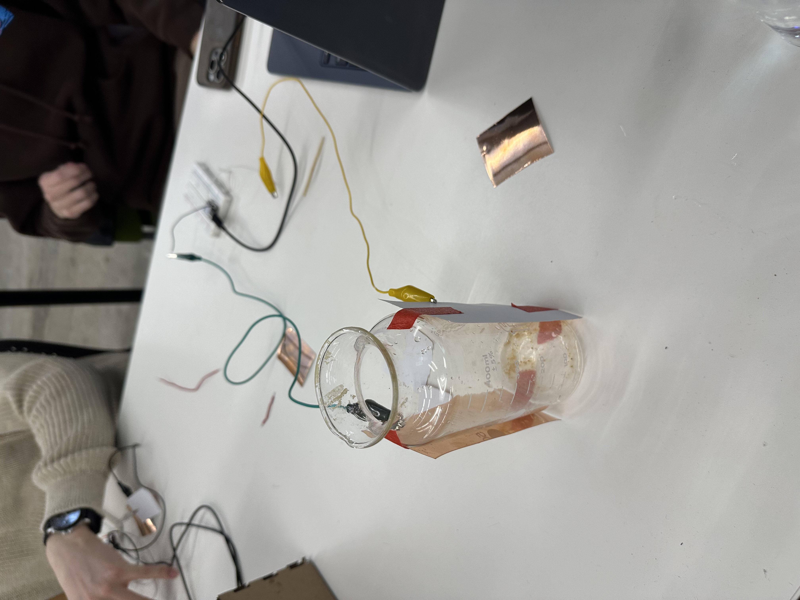</p>
<p>We then used the <a href="https://nathanmelenbrink.github.io/lab/input/capacitance/txrx.html" target="_blank">tx_rx Arduino code</a> to measure the capacitance in farads. We used the lines on the beaker to find the corresponding farads for set water measurements, which I will discuss more in section 4.</p>
<p>Additionally, I added buttons and refactored the code so that I can use buttons to set the minimum and maximum farads that correspond to the minimum and maximum amount of water I would pour.</p>
<p>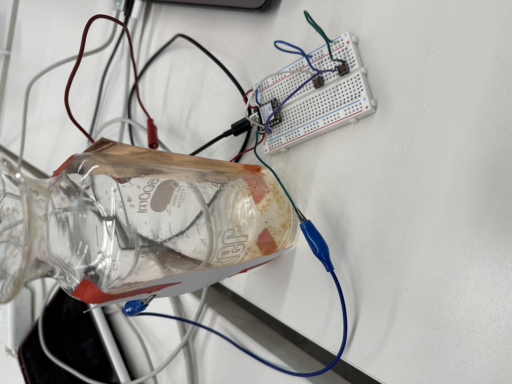</p>
<p>Here is the refactored code:</p>
<pre><code><span class="keyword">const</span> <span class="keyword">int</span> analog_pin = A0;
<span class="keyword">const</span> <span class="keyword">int</span> tx_pin = D1;
<span class="keyword">const</span> <span class="keyword">int</span> min_button_pin = D2;
<span class="keyword">const</span> <span class="keyword">int</span> max_button_pin = D3;
<span class="keyword">const</span> <span class="keyword">int</span> min_water = <span class="number">0</span>; <span class="comment">// In ml</span>
<span class="keyword">const</span> <span class="keyword">int</span> max_water = <span class="number">450</span>; <span class="comment">// in ml</span>
<span class="keyword">int</span> min_cap_val;
<span class="keyword">int</span> max_cap_val;
<span class="keyword">class</span> <span class="type">Button</span>{
<span class="keyword">int</span> pin;
<span class="keyword">public</span>:
<span class="function">Button</span>(<span class="keyword">int</span> set_pin) {
pin = set_pin;
}
<span class="keyword">void</span> <span class="function">begin</span>(){
<span class="function">pinMode</span>(pin, INPUT_PULLUP);
}
<span class="keyword">bool</span> <span class="function">pressed</span>(){
<span class="keyword">return</span> (<span class="function">digitalRead</span>(pin) == LOW);
}
};
<span class="keyword">class</span> <span class="type">Capacitor</span>{
<span class="keyword">int</span> analog;
<span class="keyword">int</span> tx;
<span class="keyword">public</span>:
<span class="function">Capacitor</span>(<span class="keyword">int</span> set_analog, <span class="keyword">int</span> set_tx) {
<span class="comment">// Assign member variables</span>
analog = set_analog;
tx = set_tx;
}
<span class="keyword">void</span> <span class="function">begin</span>() {
<span class="function">pinMode</span>(tx, OUTPUT);
}
<span class="keyword">long</span> <span class="function">tx_rx</span>(){ <span class="comment">// Function to execute rx_tx algorithm and return a value</span>
<span class="comment">// that depends on coupling of two electrodes.</span>
<span class="comment">// Value returned is a long integer.</span>
<span class="keyword">int</span> read_high;
<span class="keyword">int</span> read_low;
<span class="keyword">int</span> diff;
<span class="keyword">long int</span> sum;
<span class="keyword">int</span> N_samples = <span class="number">100</span>; <span class="comment">// Number of samples to take. Larger number slows it down, but reduces scatter.</span>
sum = <span class="number">0</span>;
<span class="keyword">for</span> (<span class="keyword">int</span> i = <span class="number">0</span>; i < N_samples; i++){
<span class="function">digitalWrite</span>(tx_pin,HIGH); <span class="comment">// Step the voltage high on conductor 1.</span>
read_high = <span class="function">analogRead</span>(analog_pin); <span class="comment">// Measure response of conductor 2.</span>
<span class="function">delayMicroseconds</span>(<span class="number">100</span>); <span class="comment">// Delay to reach steady state.</span>
<span class="function">digitalWrite</span>(tx_pin,LOW); <span class="comment">// Step the voltage to zero on conductor 1.</span>
read_low = <span class="function">analogRead</span>(analog_pin); <span class="comment">// Measure response of conductor 2.</span>
diff = read_high - read_low; <span class="comment">// desired answer is the difference between high and low.</span>
sum += diff; <span class="comment">// Sums up N_samples of these measurements.</span>
}
<span class="keyword">return</span> sum;
}
};
<span class="type">Capacitor</span> capacitor(analog_pin, tx_pin);
<span class="type">Button</span> min_button(min_button_pin);
<span class="type">Button</span> max_button(max_button_pin);
<span class="comment">// Function to calculate the ml of water, based on capacitance and set scale</span>
<span class="keyword">long</span> <span class="function">calc_ml</span>(<span class="keyword">long</span> cap) {
<span class="comment">// Ensure bounds are set</span>
<span class="keyword">if</span> (min_cap_val == -<span class="number">1</span> || max_cap_val == -<span class="number">1</span>) {
<span class="keyword">return</span> -<span class="number">1</span>;
}
<span class="keyword">return</span> (<span class="keyword">long</span>)((((<span class="keyword">float</span>)cap - (<span class="keyword">float</span>)min_cap_val) / ((<span class="keyword">float</span>)max_cap_val - (<span class="keyword">float</span>)min_cap_val)) \* ((<span class="keyword">float</span>)max_water - (<span class="keyword">float</span>)min_water));
}
<span class="keyword">void</span> <span class="function">setup</span>() {
capacitor.<span class="function">begin</span>();
min_button.<span class="function">begin</span>();
max_button.<span class="function">begin</span>();
min_cap_val = -<span class="number">1</span>; <span class="comment">// Unset to start</span>
max_cap_val = -<span class="number">1</span>; <span class="comment">// Unset to start</span>
Serial.<span class="function">begin</span>(<span class="number">9600</span>);
}
<span class="keyword">void</span> <span class="function">loop</span>() {
<span class="keyword">long</span> result = capacitor.<span class="function">tx_rx</span>();
Serial.<span class="function">println</span>(<span class="function">calc_ml</span>(result));
<span class="keyword">if</span> (min_button.<span class="function">pressed</span>()) {
min_cap_val = result;
}
<span class="keyword">else if</span> (max_button.<span class="function">pressed</span>()) {
max_cap_val = result;
}
}
</code></pre>
<h4>2. Distance Display</h4>
<p>For part two, I chose an HC-SR04 ultrasonic sensor and hooked it up to a MAX 7219 LED 32x8, as this will be the type of LED display I'm using for my project. The sensor measures the distance of an object and then displays that distance in mm on the display. For the HC-SR04, I utilized the tutorials I referenced in Week 4, and for the LED display I followed parts of of <a href="https://www.makerguides.com/max7219-led-dot-matrix-display-arduino-tutorial/" target="_blank">this tutorial</a>. I added the proper libraries and built classes for the display and the sensor.</p>
<p>Here is the code:</p>
<pre><code><span class="keyword">#include</span> <span class="string">"MD_Parola.h"</span>
<span class="keyword">#include</span> <span class="string">"MD_MAX72XX.h"</span>
<span class="keyword">#include</span> <span class="string">"SPI.h"</span>
<span class="keyword">#define</span> HARDWARE_TYPE MD_MAX72XX::FC16_HW
<span class="keyword">#define</span> MAX_DEVICES <span class="number">4</span>
<span class="keyword">const</span> <span class="keyword">int</span> trigPin = D0;
<span class="keyword">const</span> <span class="keyword">int</span> echoPin = D1;
<span class="keyword">const</span> <span class="keyword">int</span> dataPin = D2;
<span class="keyword">const</span> <span class="keyword">int</span> clkPin = D3;
<span class="keyword">const</span> <span class="keyword">int</span> csPin = D4;
<span class="keyword">class</span> <span class="type">LedMatrix</span>{
<span class="comment">// Actual MD Parola display</span>
<span class="type">MD_Parola</span> display;
<span class="keyword">public</span>:
<span class="function">LedMatrix</span>(<span class="keyword">uint8_t</span> dataPin, <span class="keyword">uint8_t</span> clkPin, <span class="keyword">uint8_t</span> csPin)
: <span class="function">display</span>(HARDWARE_TYPE, dataPin, clkPin, csPin, MAX_DEVICES) {}
<span class="keyword">void</span> <span class="function">begin</span>() {
<span class="comment">// Intialize the object</span>
display.<span class="function">begin</span>();
<span class="comment">// Set the intensity</span>
display.<span class="function">setIntensity</span>(<span class="number">8</span>);
<span class="comment">// Clear the display</span>
display.<span class="function">displayClear</span>();
<span class="comment">// Set text alignment</span>
display.<span class="function">setTextAlignment</span>(PA_RIGHT);
}
<span class="keyword">void</span> <span class="function">print</span>(<span class="type">String</span> message) {
display.<span class="function">print</span>(message);
}
};
<span class="keyword">class</span> <span class="type">Sensor</span>{
<span class="comment">// Member variables</span>
<span class="keyword">int</span> trig;
<span class="keyword">int</span> echo;
<span class="type">LedMatrix</span>& outputMatrix;
<span class="keyword">unsigned long</span> delayTime;
<span class="keyword">unsigned long</span> previousMillis;
<span class="keyword">public</span>:
<span class="function">Sensor</span>(<span class="keyword">int</span> setTrig, <span class="keyword">int</span> setEcho, <span class="type">LedMatrix</span>& setMatrix)
: trig(setTrig), echo(setEcho), outputMatrix(setMatrix) {}
<span class="keyword">void</span> <span class="function">begin</span>() {
<span class="comment">// Declare pins</span>
<span class="function">pinMode</span>(trig, OUTPUT);
<span class="function">pinMode</span>(echo, INPUT);
<span class="comment">// Start with trig off</span>
<span class="function">digitalWrite</span>(trig, LOW);
previousMillis = <span class="function">millis</span>();
}
<span class="keyword">void</span> <span class="function">beginOutputMatrix</span>() {
outputMatrix.<span class="function">begin</span>();
}
<span class="keyword">void</span> <span class="function">runSensor</span>(<span class="keyword">long</span> setDelay) {
delayTime = setDelay;
<span class="comment">// Get current time</span>
<span class="keyword">unsigned long</span> currentMillis = <span class="function">millis</span>();
<span class="comment">// Check if it is time to receive signal</span>
<span class="keyword">if</span> ((currentMillis - previousMillis) >= delayTime) {
<span class="comment">// Send pulse</span>
<span class="function">digitalWrite</span>(trig, LOW);
<span class="function">delayMicroseconds</span>(<span class="number">2</span>);
<span class="function">digitalWrite</span>(trig, HIGH);
<span class="function">delayMicroseconds</span>(<span class="number">8</span>);
<span class="function">digitalWrite</span>(trig, LOW);
<span class="comment">// Receive signal and determine distance</span>
<span class="keyword">float</span> duration = <span class="function">pulseIn</span>(echo, HIGH);
<span class="keyword">float</span> distance = (duration\*.<span class="number">0343</span>)/<span class="number">2</span> \* <span class="number">10</span>; <span class="comment">// Get distance in mm</span>
<span class="keyword">int</span> truncDistance = (<span class="keyword">int</span>) distance;
Serial.<span class="function">println</span>(truncDistance);
<span class="comment">// Display distance</span>
outputMatrix.<span class="function">print</span>((<span class="type">String</span>) truncDistance);
<span class="comment">// Log time and update state</span>
previousMillis = currentMillis;
}
}
};
<span class="type">LedMatrix</span> sensorOutput(dataPin, clkPin, csPin);
<span class="type">Sensor</span> sensor(trigPin, echoPin, sensorOutput);
<span class="keyword">void</span> <span class="function">setup</span>() {
Serial.<span class="function">begin</span>(<span class="number">9600</span>);
sensor.<span class="function">beginOutputMatrix</span>();
sensor.<span class="function">begin</span>();
}
<span class="keyword">void</span> <span class="function">loop</span>() {
sensor.<span class="function">runSensor</span>(<span class="number">100</span>);
}
</code></pre>
<p>This is what the breadboard setup looks like, along with the system in action. As you can see, I needed a voltage divider for the echo pin of the sensor.</p>
<p>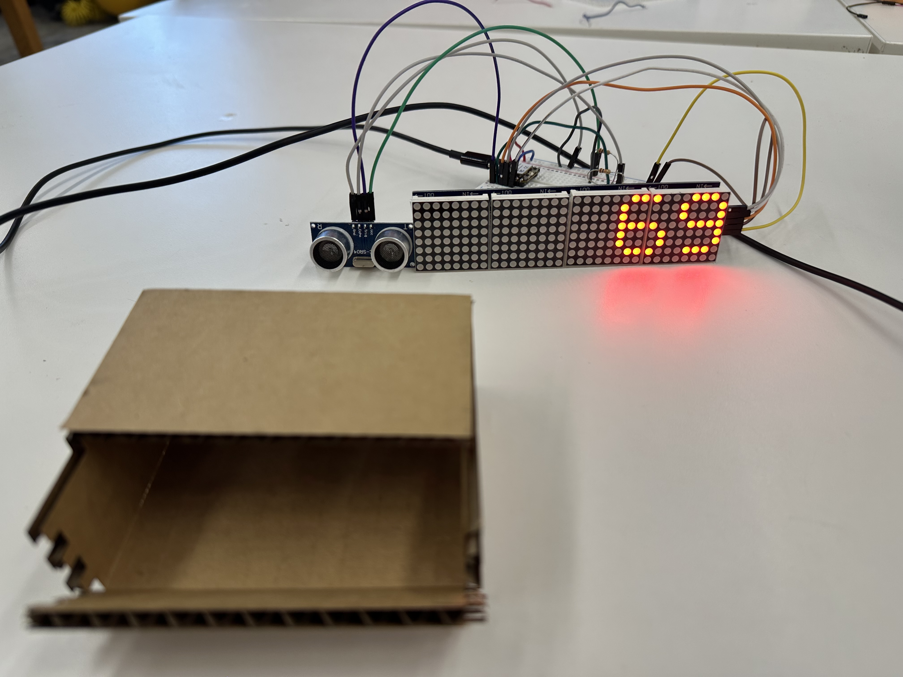</p>
<p>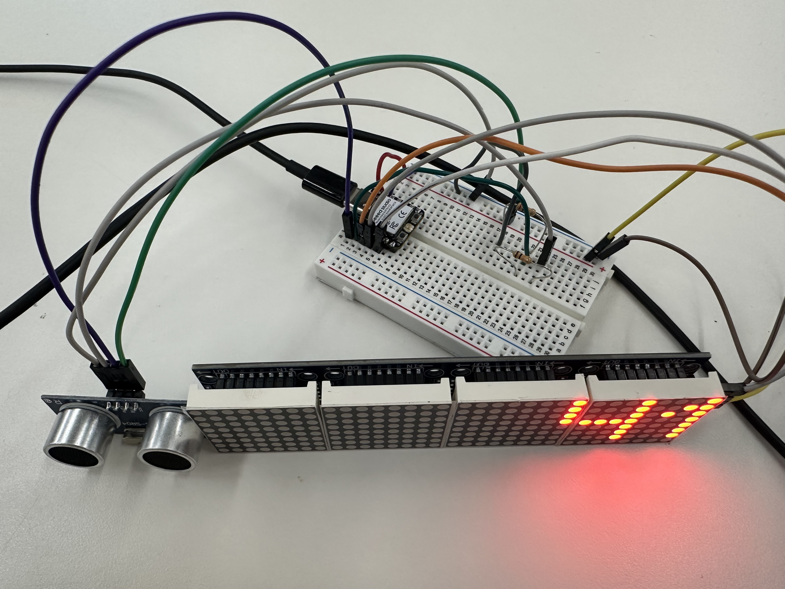</p>
<h4>3. Schematics</h4>
<h5>Capacitive Water Sensor</h5>
<p>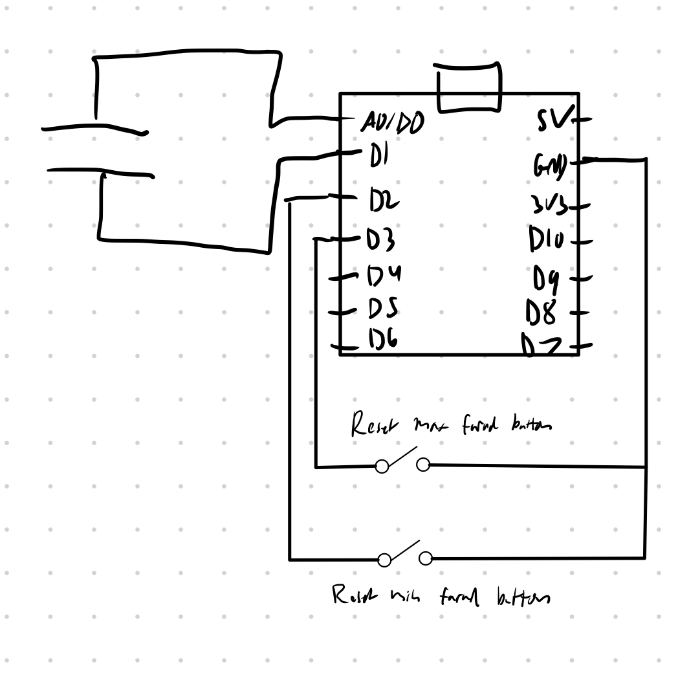</p>
<h5>Ultrasonic Sensor and LED Display</h5>
<p>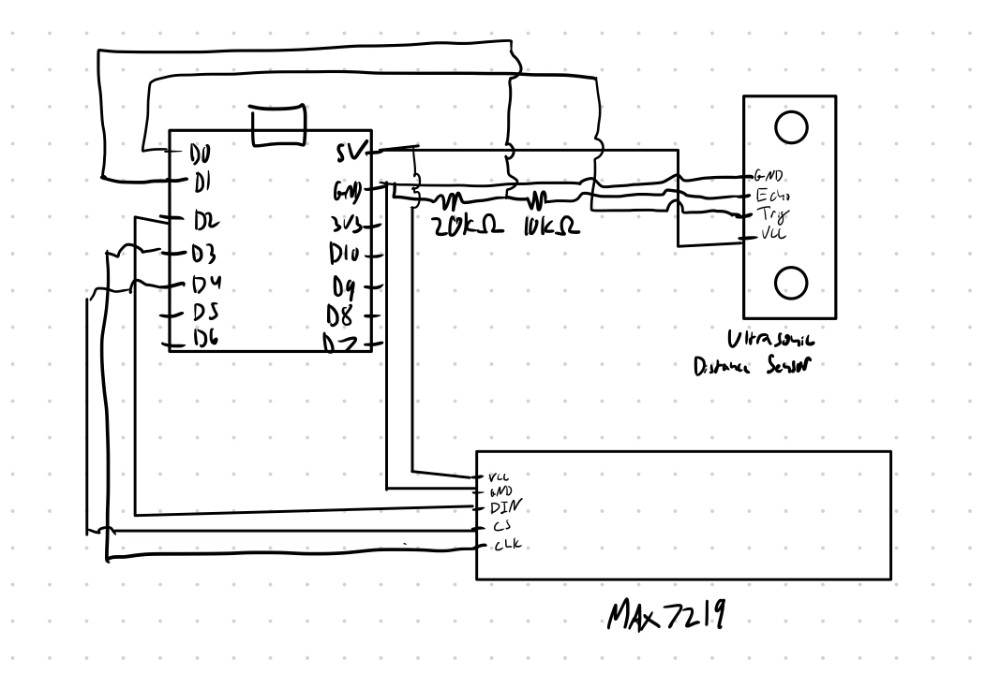</p>
<h4>4. Calibrations</h4>
<h5>Capacitive Water Sensor</h5>
<p>For the water sensor, we poured water in 50 ml increments and measured the capacitance in farads.</p>
<p>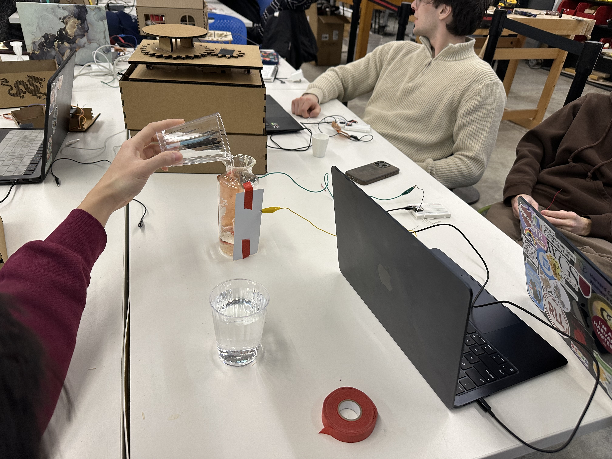</p>
<p>Plotting the relationship, we can see the relationship is linear. Thank for creating the nice looking graph Hannah!</p>
<p>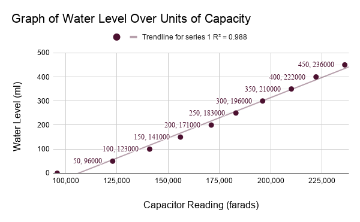</p>
<p>To use the device for measurement, we want to map the capacitance in farads to water values. We can measure the farads at 0 ml and then at the maximum (450 ml), and use the relationship between the max farads (min_cap) and min farads (max_cap) to calculate ml of water based on our farad measurement using the following formula.</p>
<p>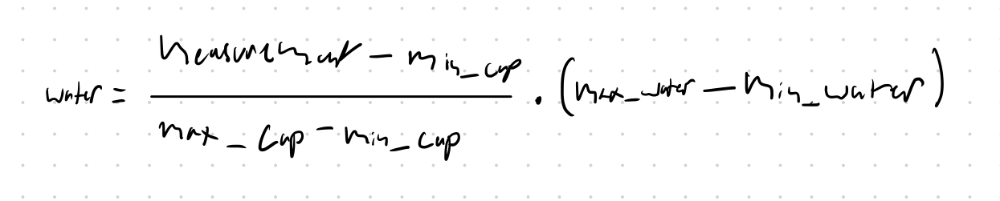</p>
<p>In my extended setup, the buttons set the capacitances that correspond to the minimum and maximum water levels, and in the calc_ml function, we use the above formula to calculate the amount of water.</p>
<h5>Ultrasonic Sensor and LED Display</h5>
<p>For calibrating the ultrasonic sensor, I used a board for a flat surface, and a meter stick as a point of reference lining up at ~25mm to start and then at points on the ruler seeing what the sensor output was.</p>
<p>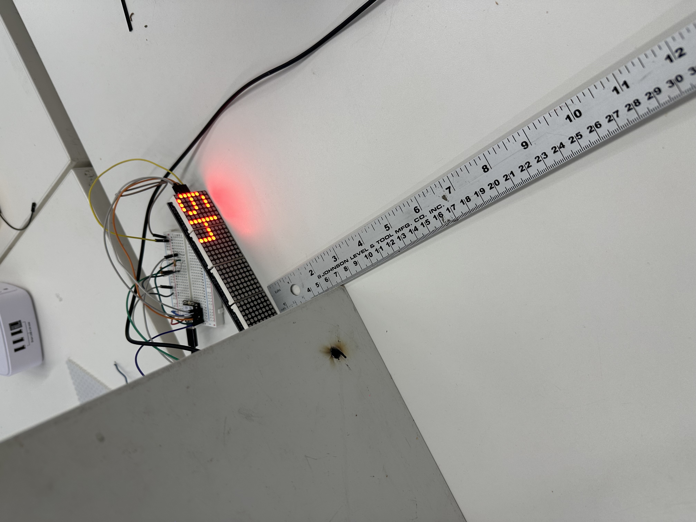</p>
<p>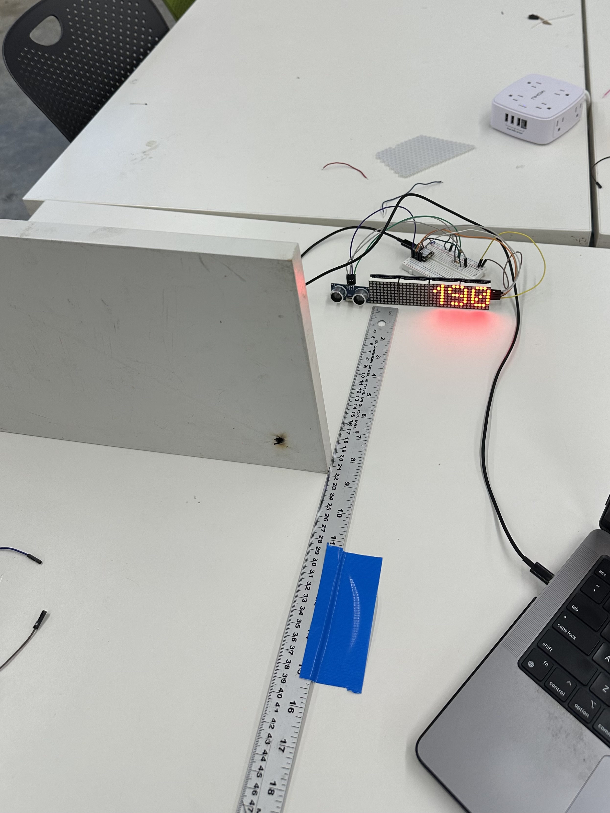</p>
<p>Plotting the points from this, I got the following graph with the ruler points on the X axis and the sensor readings on the Y axis (both in mm):</p>
<p>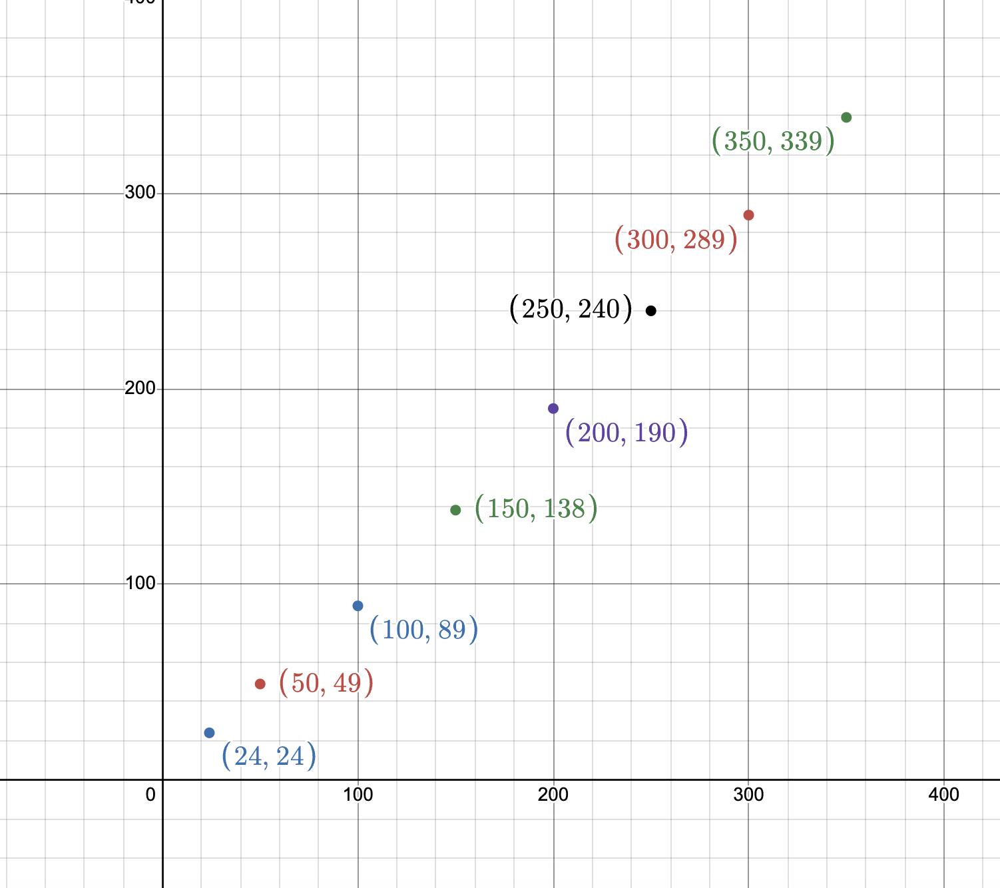</p>
<p>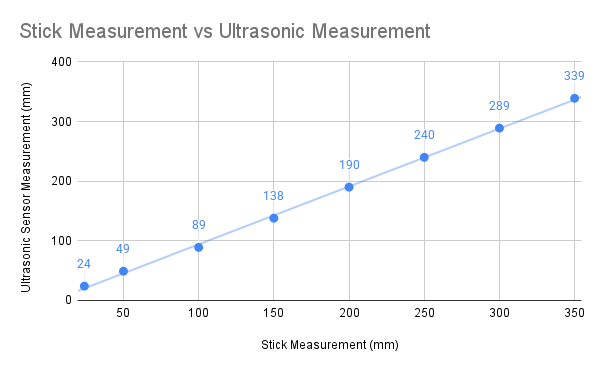</p>
<p>As we can can see, this is just about 1:1 linear, but there does seem to be a 10mm drop off around the 100mm mark which remains fairly consistent thereafter.</p>
<h4>5. CAD Files</h4>
<p>I am planning on milling out a 2.5D raven on a board of wood, which I then plan to use as wall decoration.</p>
<p>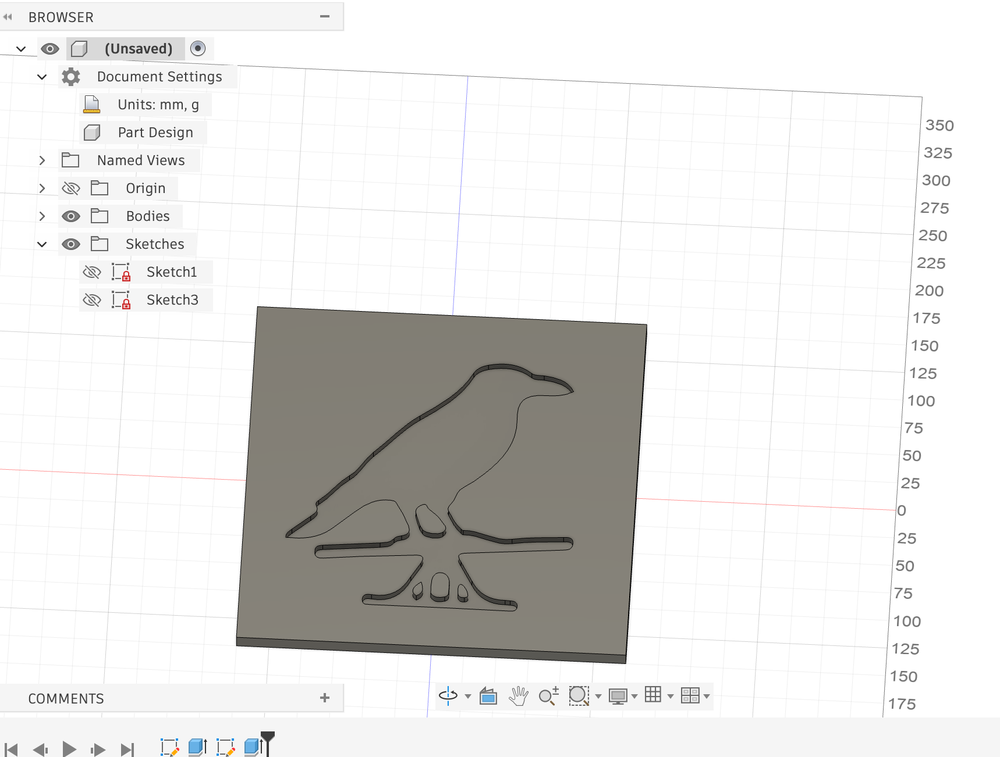</p>
<p>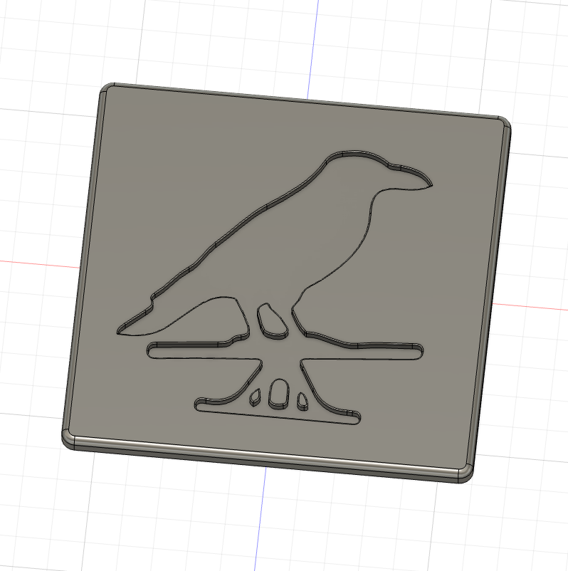</p>
<p class="margin"> </p>
<div class="flexrow">
<a id="btn" href="./raven_in.stl" download>Download STL File (Inset)
</a>
</div>
<p class="margin"> </p>
<div style="width:100%; height:60vh; max-height:600px;">
<iframe
id="vs_iframe"
src="https://www.viewstl.com/?embedded&url=https://calebcapoccia.github.io/ps70/06_inputs/raven_in.stl"
style="border:0;margin:0;width:100%;height:100%;"
loading="lazy">
</iframe>
</div>
<p>For fun, I decided to design it again this time with the raven protruding from the board. The frame and the raven are at different heights, and similar to the first STL, the edges are filleted. I will spend the next couple of weeks thinking about which one of these I want to mill.</p>
<p class="margin"> </p>
<div class="flexrow">
<a id="btn" href="./raven_out.stl" download>Download STL File (Protruding)
</a>
</div>
<p class="margin"> </p>
<div style="width:100%; height:60vh; max-height:600px;">
<iframe
id="vs_iframe"
src="https://www.viewstl.com/?embedded&url=https://calebcapoccia.github.io/ps70/06_inputs/raven_out.stl"
style="border:0;margin:0;width:100%;height:100%;"
loading="lazy">
</iframe>
</div>
<p class="margin"> </p>
</div>